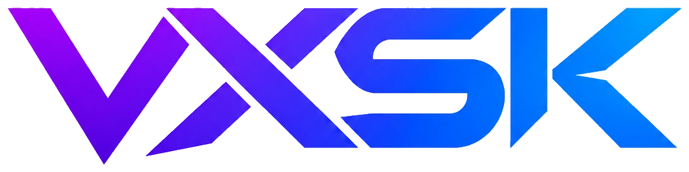

PLAYER INFORMATION / PRIVACY
PRIVACY NOTICE.
VXSK is an annual gaming event created by Voxzan and Shark. This notice describes the website's player application process. Contact gamerotp2@gmail.com with questions or to request deletion.
Information you provide
When you apply, you can provide your selected game and mode, in-game username, platform, region, optional teammate usernames, a preferred contact method (Discord, email, phone, or in-game username), and an optional message. Please do not submit addresses, passwords, identity documents, or other sensitive information.
Why information is collected
We use application details only to review interest, organize VXSK events, and contact applicants about VXSK. Applications are not published by this website. Submitting an application is not a confirmed event entry.
Find an opponent requests
The optional match-finder form collects your game, mode, rank, gamertag, region, available times and private contact handle so VXSK staff can arrange a match. New requests are sent to a private Supabase table that staff can review. They are not automatically published or displayed to other players. Players can view their own request status and delete their own requests; authorized staff can review and delete requests. Do not put phone numbers, home addresses or sensitive details in gamertags or free-text fields.
Player accounts
If you create an account, Supabase Auth processes account email addresses, password credentials, verification, sign-in sessions, optional two-step verification, and password recovery. Uploaded avatar images are stored in private Supabase Storage. Community discovery does not automatically share your avatar. If you separately choose to share your avatar, signed-in users who are not blocked and can discover your nickname, and your accepted friends, may access that avatar through short-lived image links. Both new sharing choices are OFF by default. VXSK does not store passwords in its HTML or registration forms. A verified player account and sign-in are required for tournament applications. You can request account deletion from the VXSK contact email; the site owner must handle deletion in the Supabase Auth dashboard and follow the provider's policies. We do not publish member email addresses.
Community features (staging only)
Player discovery is optional and OFF by default. If you enable it, your VXSK nickname can appear to signed-in users who are not blocked, but your email address, phone number and application contact details are not shown. You can independently choose whether to share an uploaded avatar and an approximate online/offline status (based on website heartbeats within three minutes) with accepted friends. Hiding your nickname from search does not remove existing friendships; disabling avatar/online sharing revokes new profile image and status access, but previously issued signed image links may remain usable until they expire. Players can send friend requests, accept, reject or block others. Only mutually accepted friends can send private messages, which are stored in Supabase for delivery and moderation. Messages are not end-to-end encrypted. Reports of messages can be retained for review by the VXSK team; reports are not publicly displayed. Do not share personal contact information, passwords or verification codes in messages. These social tools are undergoing staging tests and are not yet approved for the official website. VXSK must define message retention periods and a moderation process before public launch. You may contact the VXSK team to request deletion or report abuse.
Friend audio/video calls (staging only)
Call invitations are available only between accepted friends who have not blocked each other. An incoming call must be accepted before any camera or microphone access is requested. The browser transfers audio and video using WebRTC; VXSK does not record or store call media. Supabase temporarily holds call invitations and technical connection data (SDP and ICE candidates, which may include network information). Connection details are restricted to participants and cleared at call end; brief call metadata may remain for anti-spam rate limiting and staging troubleshooting. To discover peer-to-peer routes, the current preview uses an external STUN server; network addresses may be exposed to that service and to a call participant. WebRTC can fail on restrictive networks until a TURN relay is configured. You can end a call, mute your microphone, disable your camera, or block another user. Please report harassment or unwanted contact to the VXSK support email. Call features remain testing-only until two-account privacy and safety checks pass.
Account switching
Switch Account signs out the current VXSK session and asks you to sign in to another account; every account must pass its own authentication and 2FA. As an optional convenience, the site can remember an account nickname and email address in this browser only when you explicitly choose to save them. No account passwords, authenticator codes, or multiple active sessions are stored as account shortcuts. On a shared device, leave this option off and clear saved account shortcuts when finished.
Where submissions go
Tournament applications are submitted through the logged-in player session directly to Supabase, where the verified account email and unique account ID are stored with the application for staff review. The Find Rival form sends requests to a separate private Supabase staff inbox. Existing older Netlify test forms, if any, are not automatically imported into Supabase. VXSK uses these details only for event administration. Staff decisions can be checked by signing in and opening My Applications. Automatic approval/rejection emails are currently paused; this does not affect separate authentication emails used for account verification or password recovery.
Retention and your choices
We aim to retain applications only for as long as they are relevant to organizing VXSK and to delete them when no longer needed. You may request access to or deletion of application details at gamerotp2@gmail.com. Before launch, the event operator should define and publish a specific retention period and review applicable privacy rules.
External media and links
This site links to YouTube, Kick, Discord, Instagram, and TikTok. YouTube thumbnails load from YouTube's thumbnail delivery service. Following external links takes you to those platforms, which have their own privacy rules.